Chris and Stephanie's ceremony will be at Cobblestone Community church in Oxford, Ohio, where the couple attends.
Ceremony begins at xpm.
The Reception
Oxford Community Arts Center
10 S College Ave, Oxford, Ohio
The reception will be held at the Oxford Community Arts Center, which is a historical landmark which dates back to 1849.
Cocktail hour begins at xpm, dinner and reception to follow.
The Wedding Party
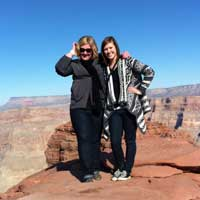
Allison NormanMatron of HonorAllison is the greatest sister Stephanie could have ever hoped for. From the days of watching Dirty Dancing on VHS and reading Berenstein Bear books, Allison has always guided Stephanie and been a supportive and encouraging big sister. Now the two enjoy swapping recipes and makeup tips.
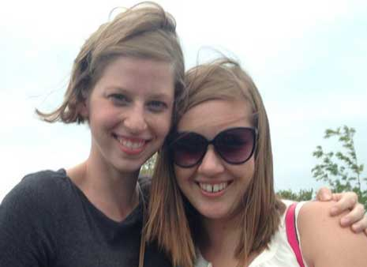
Deedee TisdaleBridesmaidStephanie met Deedee through Kappa Phi at Ohio University. Since Deedee was a wise upperclassman, she helped Stephanie through college life, like how to register for classes, telling her which professors were best, and applying for their first job. The two have traveled to Guatemala and New Orleans together and swap stories and ideas from the classroom. Stephanie has recently started sewing and loves to see the projects Deedee does!
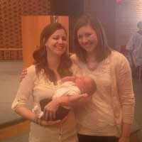
Courtney ClementsBridesmaidCourtney and Stephanie worked together at Creekside Middle School. Courtney was looking for a running buddy, and Stephanie volunteered. Although the running together didn't last, their friendship did. The two regularly eat nachos, wander around Target, and eat Chipotle.
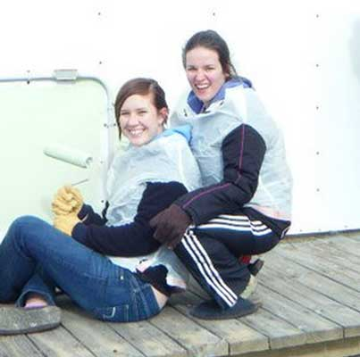
Katie FordBridesmaidKatie and Stephanie became close through Kappa Phi. Katie hung out with Chris and Stephanie at the Circleville Pumpkin Festival and even made a mix CD for the trip. In addition to her master mix CD, Katie's bubbly personality always makes her friends feel loved and special. Katie and Stephanie have long distance dates to watch Project Runway.
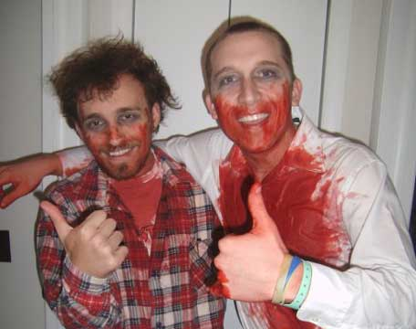
Shane HoltzmanGroomsman
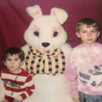
Brent SmithGroomsman
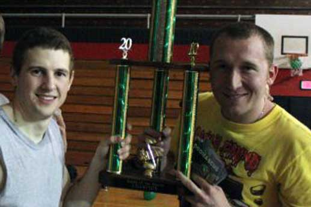
Corey BatesGroomsman
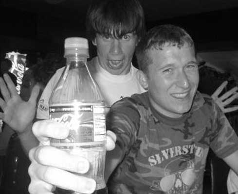
Justin GravesGroomsman
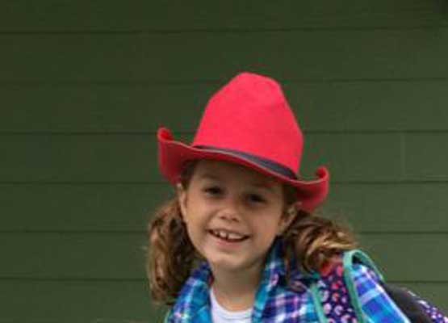
Darcy MoffettFlower GirlThe Moffetts have been a longtime family friend of Stephanie. When Stephanie stayed with them during her student teaching, Darcy and she would make pancakes and forts during the snow days.
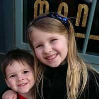
Lily EnderleFlower Girl
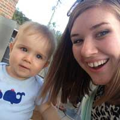
Tobias ClementsRing BearerTobais is Stephanie's godson, and Stephanie was lucky enough to be present for his delivery. We're hoping he masters walking by the time the wedding comes around! Tobias's mother is Courtney, a bridesmaid.